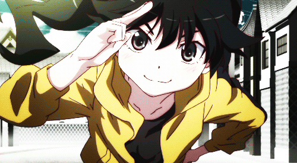

Agradecimientos
Los juegos expuestos en este trabajo forman parte de los tutoriales de Gabriela González (@gabriela2400 en twitter)
Además podeís visitar su blog aquí donde podrás acceder a su codigo de github
Imagenes y fuentes
Todas las imagenes y fuentes de esta pagina tienen CC
Algunos creadores son:
Foto de Abstracto creado por kjpargeter - www.freepik.esAttribution-ShareAlike 2.0 Genérico
Pizzadude
Those icons
A los no nominados que quieran atribución contacten conmigo via correo
Recursos
Cualquiera puede acceder a mi codigo y modificarlo para ello facilito todo el material usado en https://github.com/XFraKnight/Fran
Despedida
Espero que os haya gustado la pagina
Gracias a los Malitos,los Pescadores y a la que te cuento por ayudarme a testearla
Un saludo
